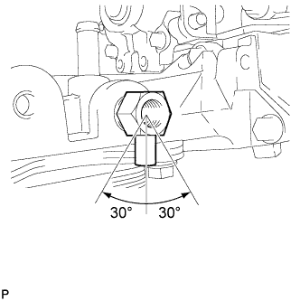
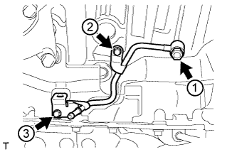
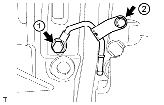
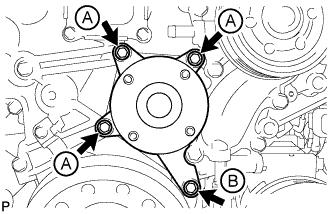
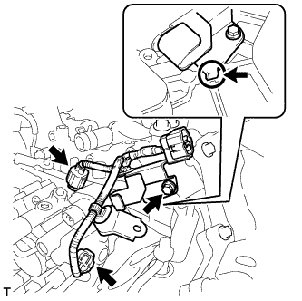
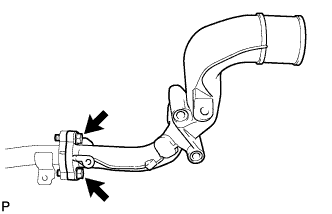
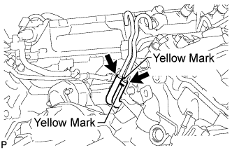
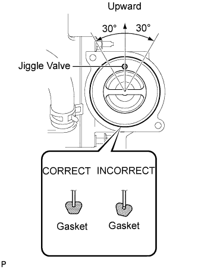
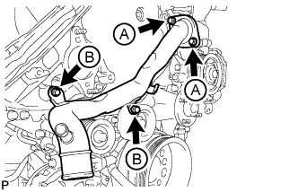

ENGINE UNIT > INSTALLATION |
| 1. INSTALL COMPRESSOR BRACKET |
 |
Install the compressor bracket with the bolt.
| 2. INSTALL V-RIBBED BELT TENSIONER ASSEMBLY |
 |
Install the V-ribbed belt tensioner with the 5 bolts.
| Item | Quantity | Length |
| Bolt A | 1 | 116 mm (4.57 in.) |
| Bolt B | 2 | 40 mm (1.58 in.) |
| Bolt C | 2 | 95 mm (3.74 in.) |
 |
Install the No. 1 idler pulley with the bolt.
 |
Install the V-ribbed belt tensioner bracket with the 3 bolts.
| 3. INSTALL STIFFENER INSULATOR RH |
 |
Install the stiffener insulator RH with the 2 bolts.
| 4. INSTALL OIL PRESSURE REGULATOR ASSEMBLY |
 |
Hold the oil pressure regulator body in a vise between aluminum plates.
Apply a light coat of engine oil to the oil pump relief valve labeled C.
Install the oil pump relief valve labeled C to the oil pressure regulator body.
Install the 2 springs labeled B to the oil pressure regulator body.
Using a 10 mm hexagon wrench, install a new gasket and the oil pump relief valve plug labeled A.
Apply a light coat of engine oil to a new O-ring, and install it to the oil pressure regulator body.
 |
Using a 26 mm wrench, install a new gasket and the oil pressure regulator.
| 5. INSTALL OIL FILTER BRACKET DRAIN COCK ASSEMBLY |
 |
Install the drain cock.
Using a 17 mm wrench, rotate the drain cock clockwise (360°) and align the position of the drain hole so that it is within the range shown in the illustration after tightening the drain cock to the specified torque.
 |
Install the oil filter drain cock plug.
| 6. INSTALL OIL TANK BRACKET |
 |
Install the oil tank bracket with the bolt.
| 7. INSTALL NO. 2 CYLINDER BLOCK INSULATOR |
 |
| 8. INSTALL ENGINE MOUNTING BRACKET LH |
 |
Install the engine mounting bracket LH with the 4 bolts.
| 9. INSTALL NO. 2 WATER BY-PASS PIPE SUB-ASSEMBLY |
 |
Temporarily install a new gasket and No. 2 water by-pass pipe with the union bolt and 2 bolts.
Tighten the union bolt and 2 bolts of the No. 2 water by-pass pipe in the order shown in the illustration.
| 10. INSTALL NO. 3 VACUUM TRANSMITTING PIPE SUB-ASSEMBLY |
 |
Install the No. 3 vacuum transmitting pipe with the 2 bolts.
Connect the vacuum hose.
| 11. INSTALL TURBOCHARGER WIRE |
 |
Install the turbocharger wire with the 2 bolts.
Attach the 3 wire harness clamps.
| 12. INSTALL NO. 2 INTAKE AIR CONNECTOR BRACKET |
 |
Install the No. 2 intake air connector bracket with the bolt.
 |
Attach the 2 wire clamps.
| 13. INSTALL NO. 1 CYLINDER BLOCK INSULATOR |
 |
| 14. INSTALL ENGINE MOUNTING BRACKET RH |
 |
Install the engine mounting bracket RH with the 4 bolts.
| 15. INSTALL NO. 4 VACUUM TRANSMITTING PIPE SUB-ASSEMBLY |
 |
Install the No. 4 vacuum transmitting pipe with the 2 bolts.
Connect the vacuum hose.
| 16. INSTALL NO. 1 WATER BY-PASS PIPE SUB-ASSEMBLY |
Temporarily install a new gasket and the No. 1 water by-pass pipe with the union bolt and bolt.
 |
Tighten the union bolt and bolt of the No. 1 water by-pass pipe in the order shown in the illustration.
| 17. INSTALL AIR TUBE SUPPORT |
 |
Install the air tube support with the 2 bolts.
| 18. INSTALL NO. 1 INTAKE AIR CONNECTOR BRACKET |
 |
Install the No. 1 intake air connector bracket with the 2 bolts.
| 19. INSTALL REAR CYLINDER HEAD PLATE LH (w/o EGR System) |
 |
Install a new gasket and the rear cylinder head plate LH with the 2 bolts.
| 20. INSTALL REAR CYLINDER HEAD PLATE RH (w/o EGR System) |
 |
Install a new gasket and the rear cylinder head plate RH with the 2 bolts.
| 21. INSTALL CYLINDER HEAD COVER SILENCER LH |
 |
Install the cylinder head cover silencer with the 3 bolts.
| 22. INSTALL CYLINDER HEAD COVER SILENCER RH |
 |
Install the cylinder head cover silencer with the 3 bolts.
| 23. INSTALL NO. 1 VACUUM TRANSMITTING PIPE SUB-ASSEMBLY |
 |
Install the vacuum transmitting pipe with the 3 bolts.
Connect the 2 vacuum hoses.
| 24. INSTALL NO. 1 VACUUM SWITCHING VALVE ASSEMBLY (for Engine Mounting) |
 |
Install vacuum switching valve with the bolt.
Connect the 2 vacuum hoses.
| 25. INSTALL FAN BRACKET SUB-ASSEMBLY |
 |
Install the fan bracket with the 4 bolts.
| Item | Length |
| Bolt A | 30 mm (1.18 in.) |
| Bolt B | 80 mm (3.15 in.) |
| 26. INSTALL NO. 2 IDLER PULLEY BRACKET (w/ Viscous Heater) |
 |
Temporarily install the No. 2 idler pulley bracket with the bolt.
Temporarily install the 2 bolts to the No. 2 idler pulley bracket bolt hole.
 |
Uniformly tighten the 3 bolts of the No. 2 idler pulley bracket in the order shown in the illustration.
| 27. INSTALL NO. 2 IDLER PULLEY (w/ Viscous Heater) |
 |
Install the collar, No. 2 idler pulley and cover with the bolt.
| 28. INSTALL NO. 3 ENGINE HANGER |
 |
Install the No. 3 engine hanger with the 2 bolts.
| 29. INSTALL NO. 1 INTERCOOLER SUPPORT BRACKET |
 |
Install the No. 1 intercooler support bracket with the 2 bolts.
| 30. INSTALL FUEL PUMP MOTOR WIRE |
 |
Install the fuel pump wire with the bolt.
| 31. INSTALL GLOW PLUG ASSEMBLY |
 |
Using a 10 mm deep socket wrench, install the 8 glow plugs.
| 32. INSTALL NO. 1 GLOW PLUG CONNECTOR |
 |
Install the 2 glow plug connectors by uniformly tightening the 8 nuts.
Install the 8 screw grommets.
Connect the 2 wire harnesses with the 2 nuts and 2 screw grommets.
| 33. INSTALL CLUTCH FLEXIBLE HOSE BRACKET (for Manual Transmission) |
 |
Install the clutch flexible hose bracket with the 2 bolts.
| 34. INSTALL NO. 1 AND NO. 2 WATER OUTLET PIPES AND WATER BY-PASS OUTLET |
 |
Align the painted mark of the No. 1 water hose joint with the protrusion of the water by-pass outlet and connect the water by-pass outlet to the No. 1 water hose joint.
 |
Align the painted mark of the No. 1 water hose joint with the painted mark of the No. 2 water outlet pipe and connect the No. 2 water outlet pipe to the No. 1 water hose joint.
 |
Connect a new gasket and the No. 1 and No. 2 water outlet pipes with the 2 bolts.
| 35. INSTALL WATER OUTLET PIPE |
 |
Install 2 new gaskets and the water outlet pipe with the 4 bolts.
| 36. INSTALL WATER OUTLET |
 |
Install a new gasket and the water outlet with the 2 bolts, and then connect the water outlet to the No. 2 water hose joint.
| 37. INSTALL NO. 2 INTERCOOLER SUPPORT BRACKET |
 |
Install the No. 2 intercooler support bracket with the 2 bolts.
| 38. INSTALL DIESEL ENGINE COOLANT TEMPERATURE SENSOR |
Install a new gasket to the sensor.
 |
Using a 19 mm deep socket wrench, install the sensor.
Connect the sensor connector.
| 39. CONNECT INLET WATER HOSE |
 |
| 40. INSTALL STARTER HOSE BRACKET |
 |
Install the starter hose bracket with the 2 bolts.
| 41. INSTALL STARTER ASSEMBLY |
 |
Install the starter with the 2 bolts.
 |
Connect the 2 hoses to the starter hose bracket.
 |
Install the No. 2 engine wire to the starter with the nut.
Connect the connector to the starter.
Attach the wire harness clamp.
| 42. INSTALL TIMING GEAR COVER INSULATOR |
 |
w/o Viscous Heater:
Install the timing gear cover insulator with the 2 bolts.
 |
w/ Viscous Heater:
Install the timing gear cover insulator.
| 43. INSTALL THERMOSTAT |
 |
Install a new gasket to the thermostat.
Insert the thermostat into the water pump with the jiggle valve facing straight upward.
| 44. INSTALL WATER INLET |
 |
Install the water inlet with the 4 bolts.
 |
Connect the No. 2 oil cooler hose to the clamp and water pump.
| 45. INSTALL NO. 1 IDLER PULLEY BRACKET (w/ Viscous Heater) |
 |
Install the No. 1 idler pulley bracket with the bolt.
| 46. INSTALL VISCOUS HEATER ASSEMBLY WITH MAGNET CLUTCH (w/ Viscous Heater) |
 |
Install the heater assembly with the 2 bolts.
Connect the 2 heater hoses.
Using pliers, grip the claws of the clips and slide the 2 clips.
Connect the connector and attach the clamp.
| 47. INSTALL NO. 2 TURBOCHARGER SUB-ASSEMBLY WITH EXHAUST MANIFOLD LH |
 |
Set a new gasket to the cylinder head LH.
 |
Install the No. 2 turbocharger with exhaust manifold LH and 10 collars to the cylinder head LH with 10 new nuts.
 |
Install a new gasket and the No. 2 inlet turbo oil pipe to the No. 1 oil pan with the union bolt.
 |
Connect the 2 connectors to the turbocharger.
| 48. INSTALL NO. 2 VENTILATION TUBE SUB-ASSEMBLY |
 |
Temporarily install a new gasket and the No. 2 ventilation tube with the union bolt and bolt.
Tighten the union bolt and bolt in the order shown in the illustration.
Connect the No. 2 vacuum transmitting hose.
| 49. INSTALL NO. 2 TURBOCHARGER STAY |
 |
Install the No. 2 turbocharger stay with the 2 bolts.
| 50. CONNECT NO. 2 OUTLET TURBO OIL HOSE |
 |
| 51. INSTALL NO. 2 TURBO WATER PIPE SUB-ASSEMBLY |
 |
Temporarily install a new gasket and the No. 2 turbo water pipe with the union bolt and bolt.
Tighten the union bolt and bolt in the order shown in the illustration.
Connect the water hose to the pipe.
| 52. INSTALL FRONT WATER BY-PASS JOINT |
 |
Install a new gasket and the front water by-pass joint.
| 53. INSTALL NO. 3 TURBO WATER PIPE SUB-ASSEMBLY |
 |
Temporarily install a new gasket and the No. 3 turbo water pipe with the union bolt and 2 bolts.
Tighten the union bolt and 2 bolts in the order shown in the illustration.
| 54. INSTALL NO. 2 EXHAUST MANIFOLD HEAT INSULATOR |
 |
Install the No. 2 exhaust manifold heat insulator with the 3 bolts.
| 55. CONNECT NO. 2 TURBO WATER HOSE |
 |
| 56. CONNECT BREATHER PLUG LH |
 |
| 57. CONNECT NO. 3 VENTILATION HOSE |
 |
| 58. INSTALL NO. 1 TURBOCHARGER SUB-ASSEMBLY WITH EXHAUST MANIFOLD RH |
 |
Set a new gasket to the cylinder head RH.
 |
Install the No. 1 turbocharger with exhaust manifold RH and 10 collars to the cylinder head RH with 10 new nuts.
 |
Install a new gasket and the No. 1 inlet turbo oil pipe to the cylinder block with the union bolt.
| 59. INSTALL NO. 1 VENTILATION TUBE SUB-ASSEMBLY |
 |
Temporarily install a new gasket and the No. 1 ventilation tube with the union bolt and bolt.
Tighten the union bolt and bolt in the order shown in the illustration.
Connect the vacuum hose.
| 60. INSTALL NO. 1 TURBOCHARGER STAY |
 |
Temporarily install the No. 1 turbocharger stay with the 2 bolts.
Tighten the 2 bolts.
| 61. INSTALL NO. 1 TURBO WATER PIPE SUB-ASSEMBLY |
 |
Install a new gasket and the No. 1 turbo water pipe with 2 new nuts and 3 bolts.
Connect the water hose.
| 62. CONNECT NO. 1 OUTLET TURBO OIL HOSE |
 |
| 63. INSTALL NO. 1 EXHAUST MANIFOLD HEAT INSULATOR |
 |
Install the No. 1 exhaust manifold heat insulator with the 3 bolts.
| 64. CONNECT NO. 2 TURBO WATER HOSE |
 |
| 65. CONNECT BREATHER PLUG RH |
 |
| 66. CONNECT NO. 2 VENTILATION HOSE |
 |
| 67. INSTALL GENERATOR ASSEMBLY |
 |
Temporarily install the generator with the 3 bolts and 2 nuts.
Uniformly tighten the 3 bolts and 2 nuts in the order shown in the illustration.
 |
Connect the generator cable and install the nut and bolt.
| 68. INSTALL NO. 1 INTAKE AIR CONNECTOR PIPE |
 |
Install the No. 1 intake air connector pipe with the bolt. Then tighten the hose clamp.
 |
Connect the 4 connectors and attach the 5 wire harness clamps.
| 69. INSTALL NO. 1 ENGINE OIL LEVEL DIPSTICK GUIDE |
 |
Apply a light coat of engine oil to a new O-ring and install it to the No. 1 engine oil level dipstick guide.
Install the No. 1 engine oil level dipstick guide with the 2 bolts.
| 70. INSTALL VACUUM PUMP ASSEMBLY |